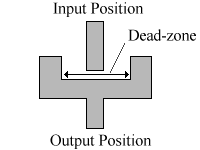
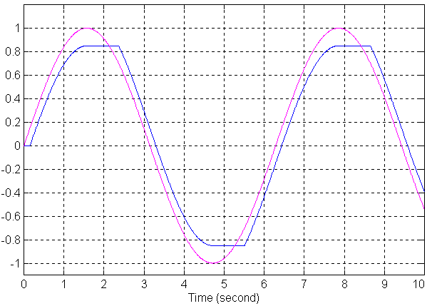
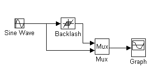

|
You are here : Control System Design - Index | Simulations | Ball & Plate | Backlash Ball and Plate Tutorial - BacklashBacklash appears in this system in the gears of the motors. The diagram below is a representation of this backlash.  The bottom line is that when the input changes direction, it must move all the way across the dead-zone before the output starts to move. The diagram below shows the effect that backlash has on a sinewave. The purple signal is the input, and the blue signal the output.  The above graph was generated with the SIMULINK system below, using a dead-zone size of 0.3.  If the input to the backlash is u, the output is v and the backlash deadzone has width 2b, then the following function describes the backlash.
that is, if the input is in the dead zone region, the output remains the same as last time. To compensate for backlash, we just have to invert this function, using an estimate of the output, v'(t). If u'(t) is the desired input, then u(t) is the compensated input.
|